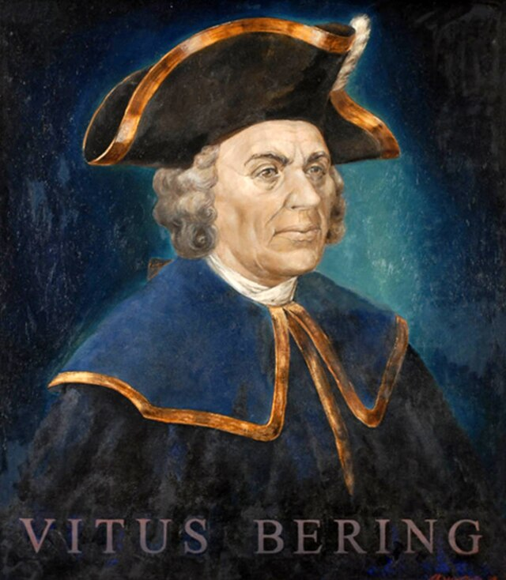

ויטוס ברינג

לחץ על התמונה להגדלה
Vitus Jonassen Bering | Source: Wikimedia Commons | License: Public Domain
מקור ומשמעות השם המלא (אטימולוגיה מורחבת)
שם פרטי: ויטוס (Vitus)
השם "ויטוס" נובע מהשפה הלטינית, שורש המילה הוא Vita, שפירושו "חיים".
משמעות היסטורית ודתית: השם מזוהה קודם כל עם "ויטוס הקדוש" (St. Vitus), קדוש מעונה נוצרי מסיציליה מהמאה ה-4, שנחשב לפטרונם של הרקדנים והבדרנים, וכן למגן מפני סערות בים. באורח אירוני וטרגי, האיש ששמו משמעותו "חיים", ושנקרא על שם פטרון המגן מסערות ימיות, מצא את מותו בייסורים כתוצאה ממחלת הצפדינה ותנאי כפור קיצוניים על אי בודד וחסר חיים בלב סערה ארקטית, הרחק ממולדתו.
שם משפחה: ברינג (Bering)
שם המשפחה "ברינג" נושא מקור דני מובהק עם שורשים טופונימיים (גיאוגרפיים).
מקור בלשני: השם נגזר ככל הנראה מהעיירה Bjerring שבדנמרק. מבחינה אטימולוגית-שורשית, מקור המילה בנורדית עתיקה יכול להתפרש בשני אופנים: האחד, קשר למילה "Bear" או Bjørn (דוב), סמל של כוח ושרידות בתנאים קשים. הפירוש השני מתייחס ל"מתחם מבוצר" או טבעת הגנה.
סמליות גיאוגרפית מודרנית: ההיסטוריה הפכה את השם "ברינג" לאחד השמות הגיאוגרפיים המוכרים ביותר בעולם המדע והקרטוגרפיה. מצר ברינג, ים ברינג, האי ברינג ואף המושג הגיאולוגי והארכיאולוגי העצום "ברינגיה" (Beringia - הגשר היבשתי הפרהיסטורי שדרכו היגרו בני אדם מסיא לאמריקה) – כולם מנציחים את הנווט הדני ששרטט את הקצה הקפוא של יבשת אסיה.
ילדות מוקדמת: מדנמרק אל הים הגדול
ויטוס יונאסן ברינג (Vitus Jonassen Bering) נולד באוגוסט 1681 בעיר הנמל הורסנס (Horsens) שבחצי האי יוטלנד, דנמרק. בניגוד לקונקיסטאדורים או הרפתקנים שחיפשו עושר פתאומי, ברינג נולד לתוך עולם של מסורת ימית ממוסדת. משפחתו, למרות שחוותה קשיים כלכליים שדרדרו אותה לעוני, הייתה בעלת ייחוס מכובד הקשור לאנשי חוק ולאנשי כנסייה, ואחיו החורגים היו יורדי ים בסחר ההולנדי והדני.
החיבור לכתר: כיצד הגיע נווט דני לשירות צאר רוסיה?
חזונו של פיוטר הגדול והגיוס (1704)
בתחילת המאה ה-18, האימפריה הרוסית בראשות הצאר פיוטר הגדול (Peter the Great) עברה תהליך מודרניזציה אגרסיבי בניסיון להפוך למעצמה אירופאית. חלק מרכזי בחזון הזה היה הקמת צי ימי רוסי מודרני מאפס. מאחר שלרוסיה לא הייתה מסורת ימית מפותחת או קציני-ים מנוסים, פיוטר הורה לסוכניו לגייס קצינים בכירים, בוני ספינות ונווטים מרחבי צפון אירופה (במיוחד מהולנד, אנגליה ודנמרק).
בשנת 1704, במהלך ביקור באמסטרדם, פגש ברינג באדמירל רוסי ממוצא נורווגי (קורנליוס קרויס) שגייס אותו לצי הרוסי החדש בתקן של קצין משנה. ברינג הוכיח את עצמו במהירות כנווט מבריק, ממושמע ונאמן לחלוטין. הוא הצטיין במלחמה הצפונית הגדולה מול שוודיה, וזכה להערכה אישית גבוהה מהצאר.
המשימה הסודית מצד הצאר (1725)
זמן קצר לפני מותו בינואר 1725, פיוטר הגדול שרטט פקודה סודית למשלחת חקר ענקית בקצה המזרחי של הקיסרות שלו. השאלה הגיאוגרפית שהטרידה את אירופה הייתה: האם יבשת אסיה מחוברת ליבשת צפון אמריקה באמצעות גשר יבשתי? או שקיים מצר ים המפריד ביניהן ומאפשר מעבר צפון-מזרחי פתוח לסין והודו?
כדי לענות על שאלה זו, הצאר פיוטר רצה למנות קצין ימי שלא יהיה נגוע בפוליטיקה פנימית רוסית, שיהיה בעל סיבולת אדירה (המשלחת דרשה חצייה רגלית של סיביר), ושנאמנותו לכתר לא מוטלת בספק. הוא בחר בויטוס ברינג למפקד משלחת קמצ'טקה הראשונה. זו הייתה נקודת האל-חזור שהפכה את הנווט הדני לחוקר הרוסי המפורסם בהיסטוריה.
אידאולוגיה: מדע, נאמנות לאימפריה וצייתנות
בשונה לחלוטין מהקונקיסטאדורים הספרדים שחיפשו ערי זהב, או מהאנגלים שחיפשו ללכוד ספינות אוצר ופעל ממניעים פרוטסטנטיים פנאטיים, ויטוס ברינג הונע על ידי אידאולוגיה מדעית ואימפריאלית ממוסדת.
מניעיו היו:
1. מילוי פקודות: כקצין צבא זר בשירות רוסיה, ברינג הונע מרגש עמוק של צייתנות, חובה ונאמנות לשלטון שנתן לו בית ומעמד.
2. חקר מדעי טהור (קרטוגרפיה): משימותיו כללו אנשי מדע, אסטרונומים ובוטנאים. המטרה לא הייתה לשדוד, אלא למדוד קווי אורך ורוחב, לגלות נתיבי סחר צפוניים (המעבר הצפון-מזרחי), ולבסס את השליטה של רוסיה בצפון הפסיפי לקראת מונופול עתידי על סחר בפרוות (במיוחד לוטרות ים). ברינג היה פקיד אימפריאלי ומדען-בשטח, אדם סבלני שמוכן לצעוד אלפי קילומטרים בשלג רק כדי להוכיח נקודה על המפה.
המסעות: דרך הייסורים בסיביר והים הפתוח
משלחת קמצ'טקה הראשונה (1725-1730): המצעד הארוך בעולם
האתגר הגדול ביותר של משלחת זו לא היה הים, אלא ההגעה אליו. מכיוון שלא היה נתיב ימי מהים הבלטי לחופי האוקיינוס השקט של רוסיה, ברינג וצוותו (שמנה עשרות אנשים, סוסים וציוד בניית ספינות) נאלצו לחצות את יבשת אפרסיה ברגל, בסירות נהר ובמזחלות כלבים מסנט פטרבורג לחוף הפסיפי – מסע יבשתי בלתי נתפס של כ-10,000 קילומטרים דרך הטייגה הקפואה של סיביר! המסע ארך יותר משנתיים, ואנשים רבים מתו מרעב ומקור בדרך.
כשהגיעו לחצי האי קמצ'טקה ב-1728, הם בנו בעצמם ספינה בשם "גבריאל הקדוש". ברינג הפליג צפונה דרך המצר שמפריד בין אסיה לאמריקה. מכיוון שלא ראה יבשה מצפון (ולא הצליח לראות את אלסקה ממזרח בשל הערפל), הוא הגיע למסקנה שהיבשות אכן מופרדות לחלוטין. הוא חזר לסנט פטרבורג עם מפות מדויקות של חופי קמצ'טקה, אך רבים באקדמיה הרוסית למדעים פקפקו בתגליתו משום שלא דרך בפועל על אדמת אמריקה.
המשלחת הצפונית הגדולה (1733-1743): הפרויקט המדעי העצום
כדי להסיר כל ספק, ארגנה הקיסרית אנה (יורשתו של פיוטר) את "משלחת קמצ'טקה השנייה", הידועה יותר כהמשלחת הצפונית הגדולה. ברינג הועמד שוב בראשה. זו הייתה המשלחת המדעית הגדולה והיקרה ביותר בהיסטוריה עד אז, וכללה כ-3,000 איש: נגרים, מלחים, קרטוגרפים, ביולוגים, רופאים, ואף את משפחותיהם.
שוב הם נאלצו לחצות את סיביר (תהליך שגזל שמונה שנות ייסורים!). לבסוף, ב-1741, יצא ברינג לים עם שתי ספינות: הקדוש פטר (בפיקודו) והקדוש פאולוס (בפיקוד סגנו צ'יריקוב). סערה הפרידה בין הספינות, אך ב-16 ביולי 1741, ברינג ראה בעיניו יבשה אדירה והרים עטורי קרחונים. הוא גילה את הר סנט אליאס (Mount St. Elias) והניח סוף סוף את כף רגלו על חופי אלסקה (אמריקה הצפונית), מה שביסס את הבעלות הרוסית באזור.
התרסקות, צפדינה ומוות על האי הבודד (דצמבר 1741)
הדרך חזרה הייתה סיוט. סערות הסתיו של האוקיינוס השקט היכו בספינתו של ברינג ללא רחם. המים אזלו, ומחלת הצפדינה (Scurvy - חוסר חמור בוויטמין C שגורם לדימומים פנימיים ולקריסת מערכות) פגעה כמעט בכל אנשי הצוות. ברינג בן ה-60 עצמו היה כה חלש עד שלא יכול היה לעמוד על רגליו.
בנובמבר 1741, הספינה נטרפה על אי בודד וחסר עצים (שייקרא לימים "אי ברינג", חלק מאיי הקומנדור). הצוות הגוסס נאלץ לחפור בורות בחול כדי להתחבא מהכפור ולהינצל מלהקות שועלי שלג כחולים שתקפו אותם. ב-19 בדצמבר 1741, ויטוס ברינג מת במחנה הארעי מאי-ספיקת לב וסיבוכי צפדינה. שרידי הצוות שהצליחו לשרוד את החורף (בעזרת בשר לוטרות ים וכלב-ים סטלאר), פירקו את שאריות הספינה הטרופה, בנו סירת חילוץ, ובנס הצליחו לחזור לקמצ'טקה בקיץ הבא, כשהם נושאים עימם את יומני התגליות של מפקדם המת ואת פרוות לוטרות הים ששינו את הכלכלה הרוסית.
מורשת והשפעה היסטורית וגיאוגרפית
1. חקר והוכחת ההפרדה היבשתית (מצר ברינג)
מחקריו הוכיחו באופן חד משמעי שיבשת אסיה ויבשת אמריקה אינן מחוברות יבשתית (לפחות לא מאז תום עידן הקרח), ושיש ביניהן מצר מים – מצר ברינג (Bering Strait). תגלית זו השלימה נתח עצום וחסר במפת העולם וסיימה ויכוחים קרטוגרפיים של מאות שנים.
2. "אמריקה הרוסית" וסחר לוטרות הים
הגעתו לאלסקה ביססה את הנוכחות של האימפריה הרוסית בצפון אמריקה (מושבה שהתקיימה עד שרוסיה מכרה את אלסקה לארצות הברית ב-1867). הניצולים מהספינה הטרופה של ברינג הביאו עמם פרוות של לוטרות ים (Sea Otters), שעוררו התלהבות כלכלית אדירה בסין וברוסיה, והובילו לייסוד החברה הרוסית-אמריקאית (Russian-American Company) ולמירוץ משאבים באוקיינוס השקט הצפוני.
מקורות וביבליוגרפיה (אימות מחקר אקדמי)
- "Island of the Blue Foxes: Disaster and Triumph on the World's Greatest Scientific Expedition" (Stephen R. Bown, 2017): מחקר מודרני מקיף ביותר המתאר בפרוטרוט את הזוועות, הצפדינה וההישרדות באי ברינג במהלך המשלחת הצפונית הגדולה. המקור מתאר היטב את הדינמיקה הלוגיסטית הבלתי אפשרית של חציית סיביר.
- "Bering: The Russian Discovery of America" (Orcutt Frost, 2003): הביוגרפיה האקדמית המובילה על ויטוס ברינג. מאמתת את ילדותו בדנמרק, כניסתו לשירות פיוטר הגדול ב-1704, ואת אמונותיו הקרטוגרפיות.
- היומנים של גיאורג וילהלם שטלר (Georg Wilhelm Steller): שטלר היה חוקר הטבע (Naturalist) במשלחת האחרונה של ברינג (ועל שמו קרויים חיות רבות כמו עורבני סטלאר ואריה-ים סטלאר). יומניו הם העדות המדעית וההיסטורית הישירה ביותר להתרסקות הספינה ולמותו של המפקד הדני על האי.